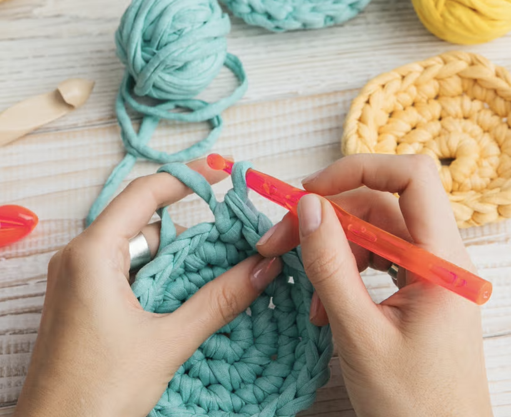

Welcome to Crazy Creator | Plass
Hello, my name is Adelaide Plass, and I am so excited to share all of the fun things that I love to do with all of you! I enjoy crochet, acting, and playing music. I have been crocheting since I was around eight years old when my grandma first taught me. I started of making very simple hot pads and Christmas ordainments for family members but now ten years later I have begun making large stuffed animals that I can sell. These projects have become more and more challenging as I find projects with more parts. With all of the little parts that I have to make it now takes so much longer for me to finish my projects.